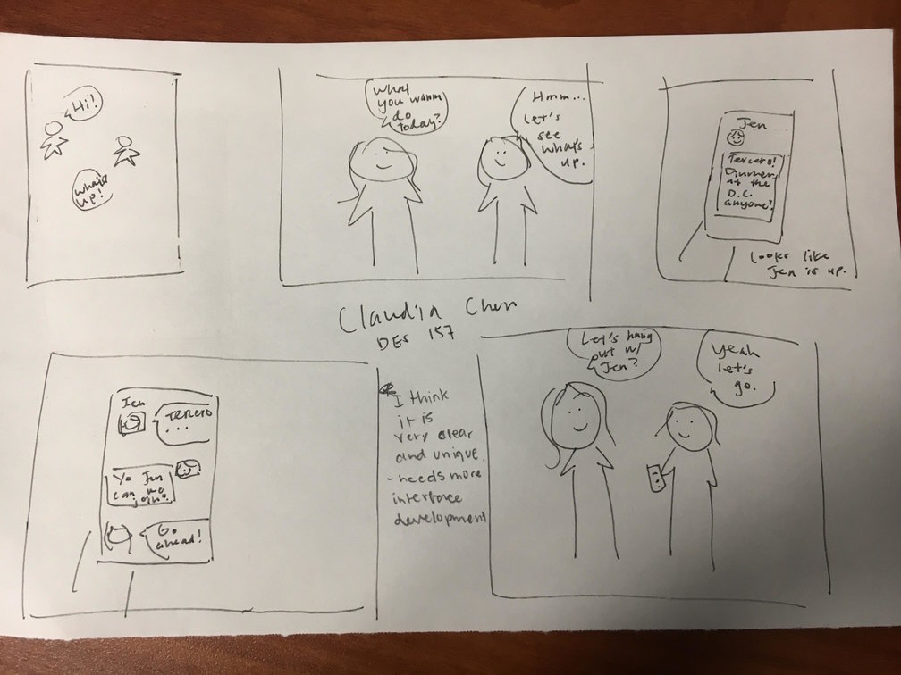
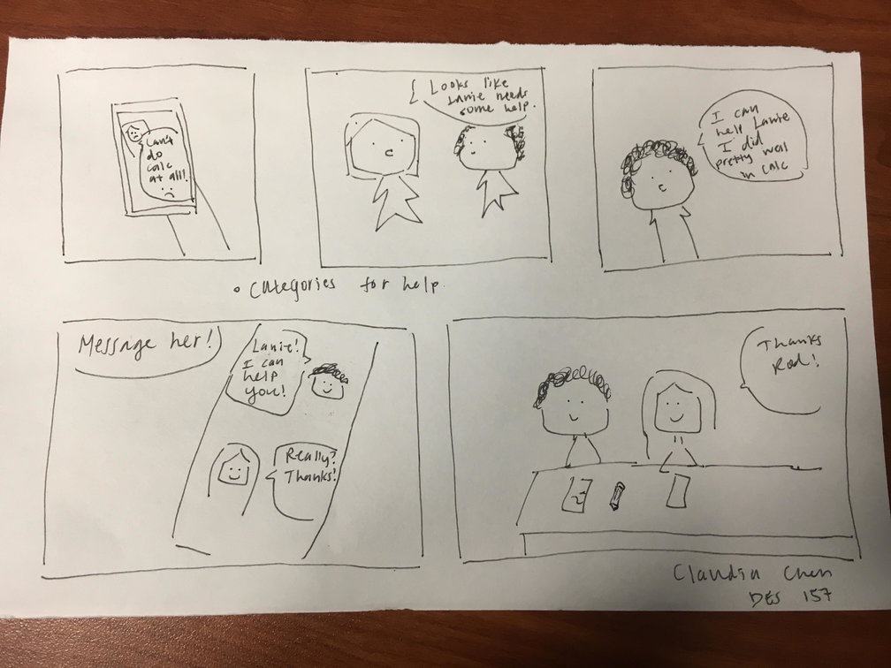

The purpose of my app is to bring together people in a college community where we can all help one another in some way.

The first storyboard portrays two friends meeting up. They have not solidified their plans yet. One of them checks on the app something they can do for fun, and sees their mutual friend inviting people on her feed to have dinner with her. The two original friends agree to hang out with Jen tonight. What I learned from the feedback of my storyboard is to show more of her the interface would look and how would people itneract with it. 
The second storyboard shows someone on the app and seeing a friend, Lanie, vocalizing their struggle with calculus. Rod, the subject of the storyboard realizes he can help her and messages her. The two are later seen studying together. My feedback for this storyboard suggests I break up the social groups on my app into categories. One can be academics, one can be purely social, and others can be hobby-oriented (like gym buddies, etc.)